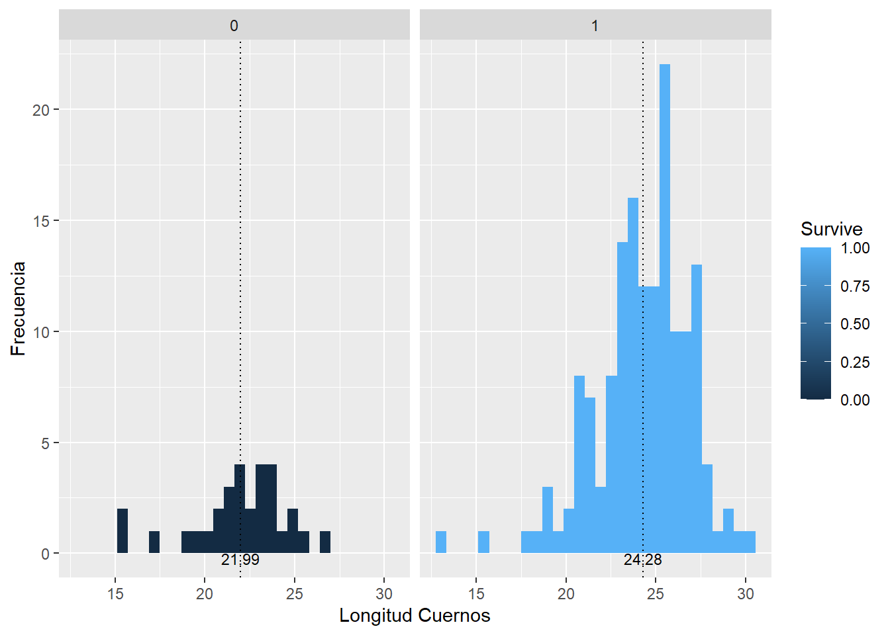
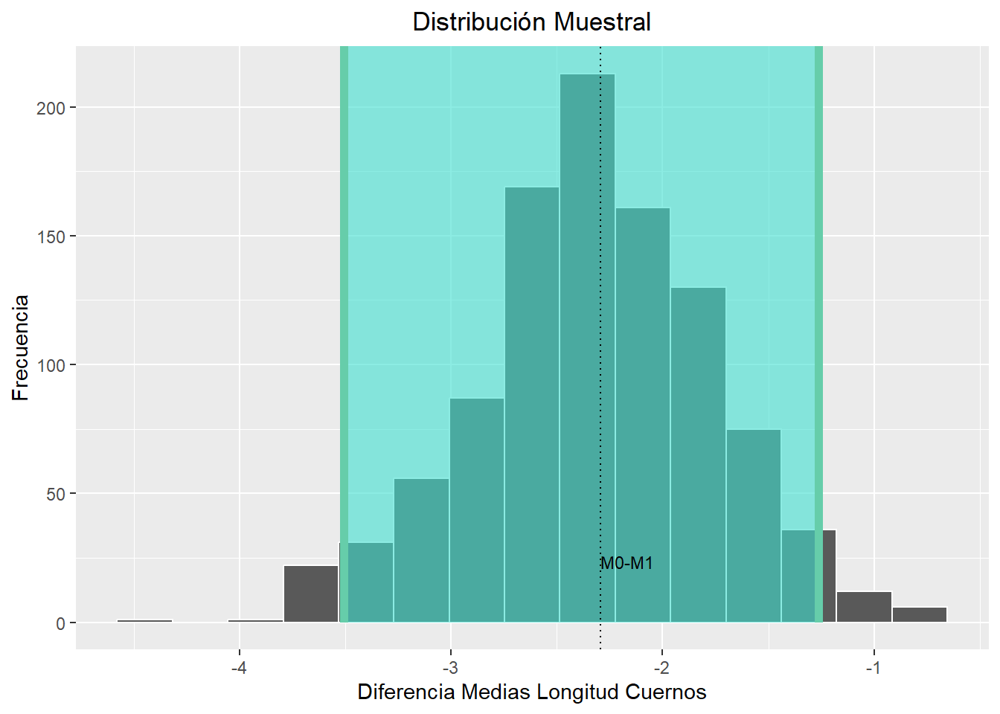
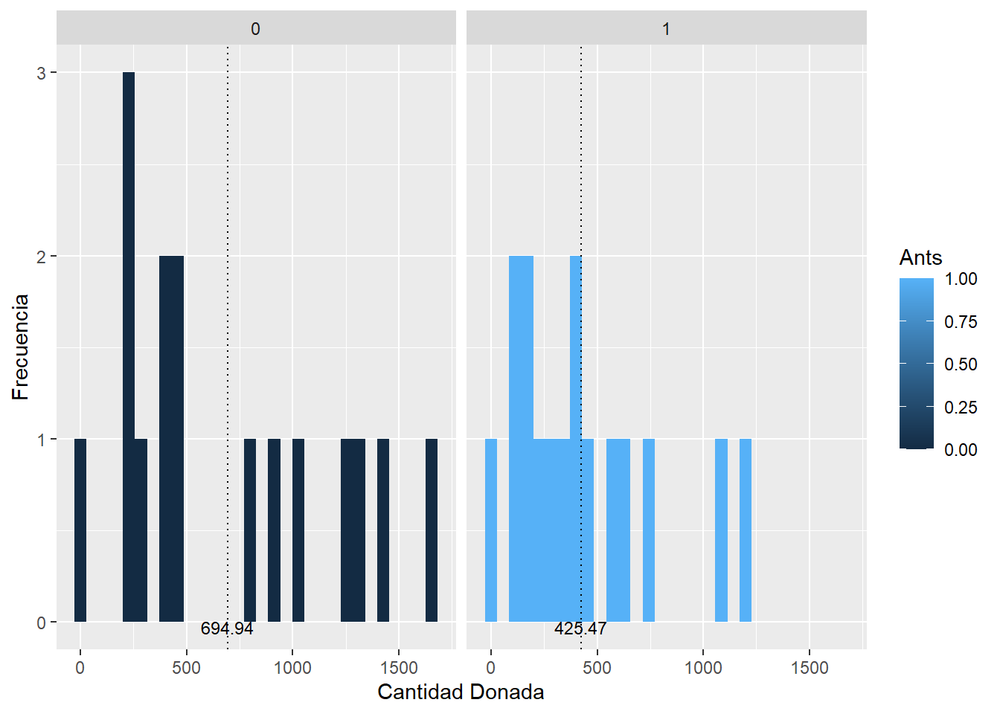
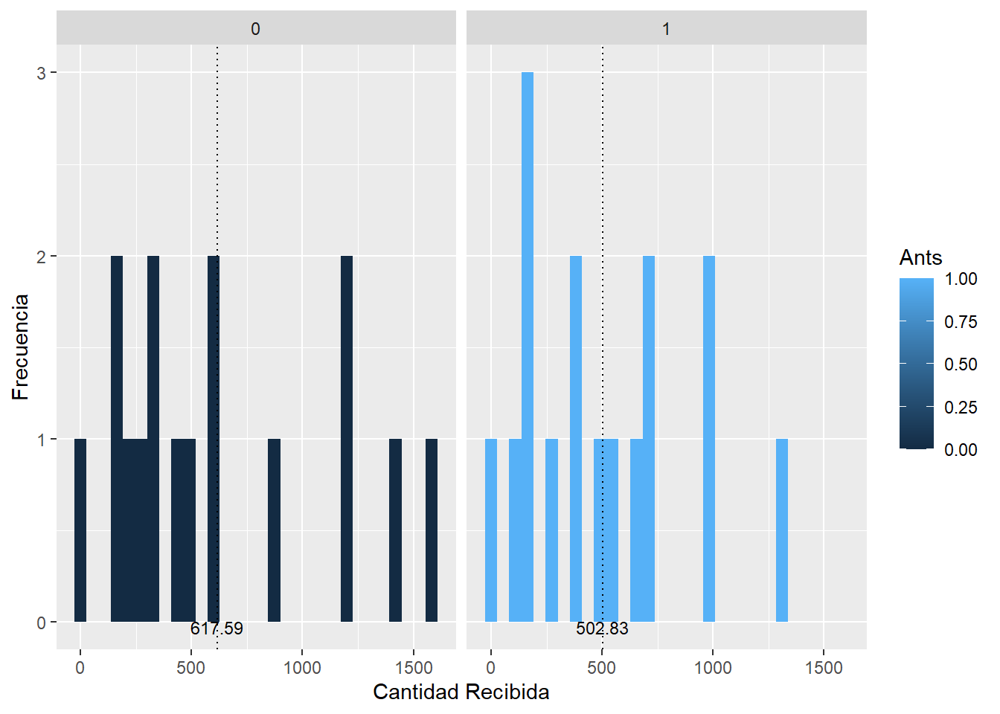
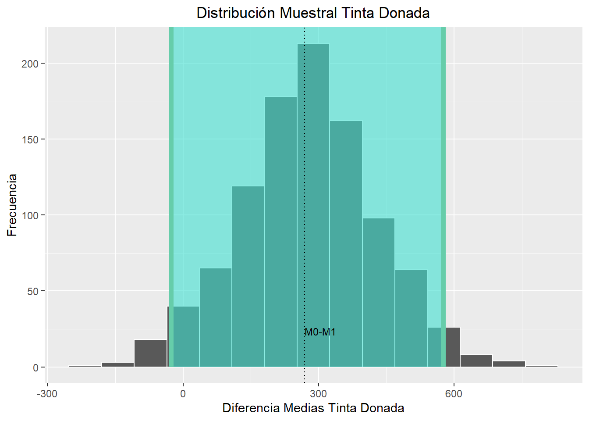
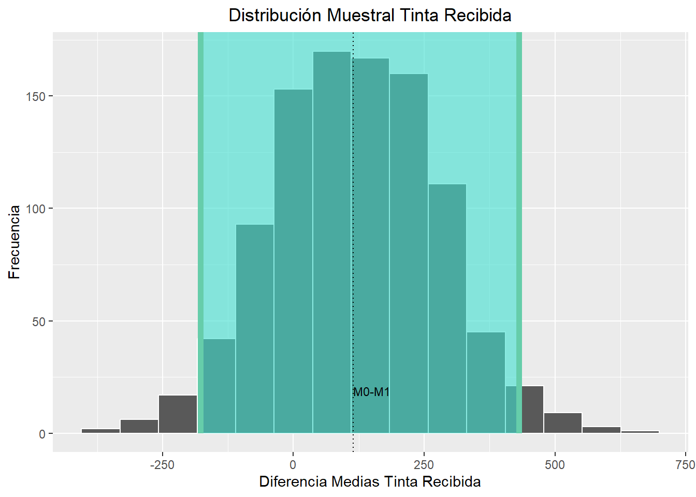

Phrynosoma mcallii (lagarto cornudo o llora sangre) es una especie de lagarto que tiene muchas características inusuales, incluyendo la habilidad de expulsar sangre por sus ojos. La especie es nombrada por la serie de cuernos que rodean su cabeza. Los herpetólogos recientemente han propuesto la idea de que estas proyecciones pueden estar relacionadas con protección ante la depredación, tomando ventaja sobre su principal depredador Lanius lodovicianus, un pequeño pájaro que mata a sus presas con una espina y los guarda para comérselos luego.
Los investigadores identificaron los restos de 30 lagartijas que fueron víctimas del depredador y midieron la longitud de los cuernos (Young et al., 2004). Como grupo de comparación ellos midieron la misma característica en 154 lagartijas vivas. Los datos de longitud de cuernos para ambos grupos muestréales se encuentran en el archivo Lagartijas.csv.
Con base en estos datos:
a.[0.3 puntos] Explore visualmente sus datos.
library(readr)library(ggplot2)library(dplyr)
Adjuntando el paquete: 'dplyr'
The following objects are masked from 'package:stats':
filter, lag
The following objects are masked from 'package:base':
intersect, setdiff, setequal, union
lag <-read.csv("Lagartijas.csv") med <- lag |>group_by(Survive) |>summarise("mean"=mean(Squamosal_horn_length))med
graf <-ggplot(data=lag, aes(x=Squamosal_horn_length, fill= Survive) )+geom_histogram()+facet_wrap(~Survive)+geom_vline(data = med, aes(xintercept = mean), color ="black",linetype ="dotted")+labs(y="Frecuencia", x ="Longitud Cuernos" )+geom_text(data= med, aes(label=round(mean,2),x=mean),y = .05, color ="black", vjust =1,size=3)graf
`stat_bin()` using `bins = 30`. Pick better value with `binwidth`.

b.[0.15 puntos] Escoja un estadístico de prueba para validar la propuesta de los investigadores. Justifique su elección.
Se elige la media como el estadístico de prueba. Con el propósito de determinar si el tamaño de los cuernos afecta el hecho de que sean más o menos depredadas.
c.[0.1 puntos] Plantee la hipótesis nula y la alternativa teniendo en cuenta la pregunta de investigación mencionada.
$ H_0: m_0 - m_1 = 0$ $H_a: m_0 m_1 $
d.[0.15 puntos] Calcule el estadístico de prueba escogido en el conjunto de datos tomados.
library(infer)
Warning: package 'infer' was built under R version 4.4.3
lag <- lag |>mutate(Survive =as.factor(Survive))datos_obs <- lag |>specify(Squamosal_horn_length ~ Survive) |>calculate(stat ="diff in means",order =c("0","1") )datos_obs
e.[0.9 puntos] Determine si la longitud de los cuernos hormigas en esta especie sirve o no como protección ante la depredación. Además del resultado numérico, muestre gráficamente sus resultados y discútalos.
permu <- lag |>specify(Squamosal_horn_length ~ Survive) |>hypothesize(null ="independence") |>generate(reps=1000,type="permute") |>calculate(stat ="diff in means",order =c("0","1") )permu |>visualize()+labs(y="Frecuencia", x ="Diferencia Medias Longitud Cuernos" , title ="Distribución Nula")+geom_vline(data = datos_obs, aes(xintercept = stat), color ="black",linetype ="dotted")+geom_text(data= datos_obs, aes(label="M0-M1",x=stat),y = .1, color ="black", vjust =-4,size=3,hjust=-0.0000001)+theme(plot.title =element_text(hjust =0.5))+scale_color_manual(values =c("Diferencia de Medias Observada"="black"))
Warning: No shared levels found between `names(values)` of the manual scale and the
data's colour values.
Warning: Please be cautious in reporting a p-value of 0. This result is an approximation
based on the number of `reps` chosen in the `generate()` step.
ℹ See `get_p_value()` (`?infer::get_p_value()`) for more information.
prueba
Asumiendo un nivel de significancia de 0.001 se puede concluir que dado que el valor-P es de 0 se rechaza la hipótesis nula, es decir que, las medias de los cuernos de las hormigas depredadas y no depredadas son diferentes. En donde, se observa que la dirección de las medias tiende hacia la izquierda, dado que M0 es mayor que M1, lo cual indica que, la media de los cuernos de las hormigas que no fueron depredadas es más grande.
f.[0.9 puntos] Encuentre el intervalo de confianza del valor obtenido para el estadístico de prueba que escogió. Además del resultado numérico, muestre gráficamente sus resultados y discútalos.
boots <- lag |>specify(Squamosal_horn_length ~ Survive) |>generate(reps=1000,type="bootstrap") |>calculate(stat ="diff in means",order =c("0","1") )IC <- boots |>get_confidence_interval(point_estimate = datos_obs)
Using `level = 0.95` to compute confidence interval.
IC
boots |>visualize()+shade_confidence_interval(endpoints=IC)+labs(y="Frecuencia", x ="Diferencia Medias Longitud Cuernos" , title ="Distribución Muestral")+geom_vline(data = datos_obs, aes(xintercept = stat), color ="black",linetype ="dotted")+geom_text(data= datos_obs, aes(label="M0-M1",x=stat),y = .1, color ="black", vjust =-4,size=3,hjust=-0.0000001)+theme(plot.title =element_text(hjust =0.5))+scale_color_manual(values =c("Diferencia de Medias Observada"="black"))
Warning: No shared levels found between `names(values)` of the manual scale and the
data's colour values.

Según el intervalo de confianza del 95% de la diferencias de medias (\(m_0 - m_1\)), este se mueve entre -3.37 y -1.34, esto indica que la media real para cada población no puede ser igual, ya que el IC no considera el 0 dentro de su rango. Sino, por el contrario indica que, \(m_0\) es mayor para el 95% de los datos, según la distribución muestral.
2. Abejorros polinizadores
El conjunto de datos pollination.txt contiene los datos sobre un experimento de polinización por abejorros. Utilizando flores artificiales se expuso a una serie de colonias a 2 tratamientos experimentales, uno donde las flores estaban siendo cuidadas por hormigas, mientras que en el otro no. Las flores artificiales están provistas con un sistema de dosificación de tinta tal que se pudo cuantificar la cantidad de tinta extraída (received) y dejada (donated) por los abejorros en ambos tratamientos. La pregunta científica detrás de este experimento fue: si la presencia de hormigas en una planta puede afectar las visitas (frecuencia y/o duración) por parte de los abejorros, en este caso el efecto se evalúa a través del movimiento de tinta entre las diferentes flores.
med <- pol |>group_by(Ants) |>summarise("mean_don"=mean(as.numeric(Donated)),"mean_rec"=mean(as.numeric(Received)))med
graf_don<-ggplot(data=pol, aes(x=Donated, fill= Ants) )+geom_histogram()+facet_wrap(~Ants)+geom_vline(data = med, aes(xintercept = mean_don), color ="black",linetype ="dotted")+labs(y="Frecuencia", x ="Cantidad Donada" )+geom_text(data= med, aes(label=round(mean_don,2),x=mean_don),y = .01, color ="black", vjust =1,size=3)graf_don
`stat_bin()` using `bins = 30`. Pick better value with `binwidth`.

graf_rec<-ggplot(data=pol, aes(x=Received, fill= Ants) )+geom_histogram()+facet_wrap(~Ants)+geom_vline(data = med, aes(xintercept = mean_rec), color ="black",linetype ="dotted")+labs(y="Frecuencia", x ="Cantidad Recibida" )+geom_text(data= med, aes(label=round(mean_rec,2),x=mean_rec),y = .01, color ="black", vjust =1,size=3)graf_rec
`stat_bin()` using `bins = 30`. Pick better value with `binwidth`.

b.[0.15 puntos] Escoja un estadístico de prueba para validar la propuesta de los investigadores. Justifique su elección.
Se elige la media como el estadístico de prueba. Con el propósito de determinar si la presencia de hormigas afecta la cantidad de tinta donada y recibida por el grupo de abejorros.
c.[0.1 puntos] Plantee la hipótesis nula y la alternativa teniendo en cuenta la pregunta de investigación mencionada.
d.[0.15 puntos] Calcule el estadístico de prueba escogido en el conjunto de datos tomados.
pol <- pol |>mutate(Ants =as.factor(Ants))datos_don <- pol |>specify(Donated ~ Ants) |>calculate(stat ="diff in means",order =c("0","1") )datos_don
datos_rec <- pol |>specify(Received ~ Ants) |>calculate(stat ="diff in means",order =c("0","1") )datos_rec
e.[0.9 puntos] Determine si la presencia de hormigas afecta la cantidad de tinta donada y recibida por las colonias de abejorros. Además del resultado numérico, muestre gráficamente sus resultados y discútalos.
permu_don <- pol |>specify(Donated ~ Ants) |>hypothesize(null ="independence") |>generate(reps=1000,type="permute") |>calculate(stat ="diff in means",order =c("0","1") )permu_don |>visualize()+labs(y="Frecuencia", x ="Diferencia Medias Tinta Donada" , title ="Distribución Nula Tinta Donada")+geom_vline(data = datos_don, aes(xintercept = stat), color ="black",linetype ="dotted")+geom_text(data= datos_don, aes(label="M0-M1",x=stat),y = .1, color ="black", vjust =-4,size=3,hjust=-0.0000001)+theme(plot.title =element_text(hjust =0.5))+scale_color_manual(values =c("Diferencia de Medias Observada"="black"))
Warning: No shared levels found between `names(values)` of the manual scale and the
data's colour values.
Se observa que el estadístico de prueba se encuentra dentro de la distribución nula tanto para la tinta recibida como para la tinta donada. Además, el valor-P para la prueba de tinta donada es de 0.08, lo que indica que no se rechaza la hipótesis nula asumiendo un nivel de significancia de 0.01. Esto sugiere que no hay diferencia en las medias de la cantidad de tinta donada, independientemente de la presencia de hormigas.
De manera similar, el valor-P obtenido para la tinta recibida también respalda la no rechazo de la hipótesis nula. Por lo tanto, se concluye que la presencia de hormigas no afecta la cantidad de tinta donada ni la tinta recibida por las colonias de abejorros.
f.[0.9 puntos] Encuentre el intervalo de confianza del valor obtenido para el estadístico de prueba que escogió. Además del resultado numérico, muestre gráficamente sus resultados y discútalos.
boots_don <- pol |>specify(Donated ~ Ants) |>generate(reps=1000,type="bootstrap") |>calculate(stat ="diff in means",order =c("0","1") )IC_don <- boots_don |>get_confidence_interval(point_estimate = datos_don)
Using `level = 0.95` to compute confidence interval.
IC_don
boots_don |>visualize()+shade_confidence_interval(endpoints=IC_don)+labs(y="Frecuencia", x ="Diferencia Medias Tinta Donada" , title ="Distribución Muestral Tinta Donada")+geom_vline(data = datos_don, aes(xintercept = stat), color ="black",linetype ="dotted")+geom_text(data= datos_don, aes(label="M0-M1",x=stat),y = .1, color ="black", vjust =-4,size=3,hjust=-0.0000001)+theme(plot.title =element_text(hjust =0.5))+scale_color_manual(values =c("Diferencia de Medias Observada"="black"))
Warning: No shared levels found between `names(values)` of the manual scale and the
data's colour values.

boots_rec <- pol |>specify(Received ~ Ants) |>generate(reps=1000,type="bootstrap") |>calculate(stat ="diff in means",order =c("0","1") )IC_rec <- boots_rec |>get_confidence_interval(point_estimate = datos_rec)
Using `level = 0.95` to compute confidence interval.
IC_rec
boots_rec |>visualize()+shade_confidence_interval(endpoints=IC_rec)+labs(y="Frecuencia", x ="Diferencia Medias Tinta Recibida" , title ="Distribución Muestral Tinta Recibida")+geom_vline(data = datos_rec, aes(xintercept = stat), color ="black",linetype ="dotted")+geom_text(data= datos_rec, aes(label="M0-M1",x=stat),y = .1, color ="black", vjust =-4,size=3,hjust=-0.0000001)+theme(plot.title =element_text(hjust =0.5))+scale_color_manual(values =c("Diferencia de Medias Observada"="black"))
Warning: No shared levels found between `names(values)` of the manual scale and the
data's colour values.

El intervalo de confianza del 95% para la cantidad de tinta donada muestra que la diferencias de medias (\(m_0 - m_1\)), se mueve entre -23.37 y 581.53, esto indica que en general \(m_1\) es mayor que \(m_0\), es decir que la media de cantidad de tinta donada es mayor en presencia de hormigas, no obstante la diferencia no es significativa, según el valor-p obtenido. Asimismo, muestra que es posible que ambas medias sean iguales, pues el cero se encuentra dentro del intervalo de confianza. Por otro lado, el intervalo de confianza del 95% para la cantidad de tinta recibida oscila entre -182.966 y 440.97. En el caso de tinta recibida se observa la misma tendencia en donde \(m_1\) es mayor que \(m_0\), no obstante no es tan fuerta esta tendencia en comparación a tinta donada. Adicionalmente, se observa que las medias también pueden llegar a ser iguales, ya que el intervalo si considera el cero. En términos generales se puede concluir que la presencia de hormigas hace que la cantidad donada y recibida sea mayor que cuando no hay presencia de hormigas.